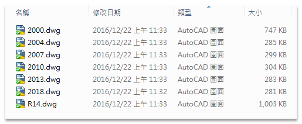
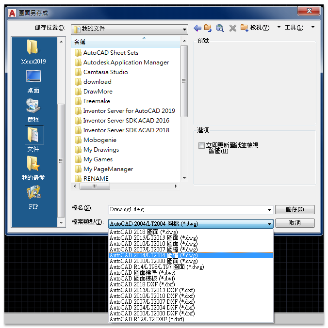
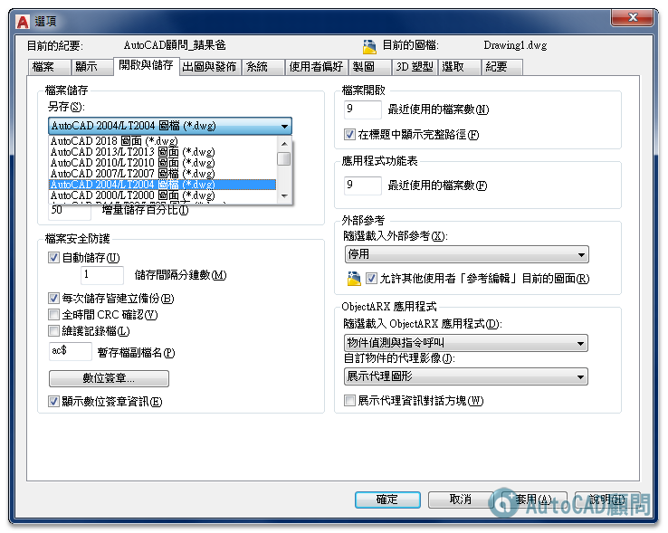

※※※ AutoCAD 的版本說明 ※※※
AutoCAD 是電腦輔助設計， R 是 VERSION 版本的意思，而 14 則是第 14 個 。
所以 AutoCAD R14 是 AutoCAD 第 14 個 電腦輔助設計 版本。
從 AutoCAD 2000 不再用 R 來代表，而是使用年份代表產品名稱。
■ AutoCAD 2000 ...為 R15.0版 是 AutoCAD 第 15 個 電腦輔助設計 版本。
■ AutoCAD 2000i ...為 R15.1版 是 AutoCAD 第 16 個 電腦輔助設計 版本。
■ AutoCAD 2002 ...為 R15.2版 是 AutoCAD 第 17 個 電腦輔助設計 版本。
■ AutoCAD 2004 ...為 R16.0版 是 AutoCAD 第 18 個 電腦輔助設計 版本。
■ AutoCAD 2005 ...為 R16.1版 是 AutoCAD 第 19 個 電腦輔助設計 版本。
■ AutoCAD 2006 ...為 R16.2版 是 AutoCAD 第 20 個 電腦輔助設計 版本。
■ AutoCAD 2007 ...為 R17.0版 是 AutoCAD 第 21 個 電腦輔助設計 版本。
■ AutoCAD 2008 ...為 R17.1版 是 AutoCAD 第 22個 電腦輔助設計 版本。
■ AutoCAD 2009 ...為 R17.2版 是 AutoCAD 第 23 個 電腦輔助設計 版本。
■ AutoCAD 2010 ...為 R18.0版 是 AutoCAD 第 24 個 電腦輔助設計 版本。
■ AutoCAD 2011 ...為 R18.1版 是 AutoCAD 第 25 個 電腦輔助設計 版本。
■ AutoCAD 2012 ...為 R18.2版 是 AutoCAD 第 26 個 電腦輔助設計 版本。
■ AutoCAD 2013 ...為 R19.0版 是 AutoCAD 第 27 個 電腦輔助設計 版本。
■ AutoCAD 2014 ...為 R19.1版 是 AutoCAD 第 28 個 電腦輔助設計 版本。
■ AutoCAD 2015 ...為 R20.0版 是 AutoCAD 第 29 個 電腦輔助設計 版本。
■ AutoCAD 2016 ...為 R20.1版 是 AutoCAD 第 30 個 電腦輔助設計 版本。
■ AutoCAD 2017 ...為 R21.0版 是 AutoCAD 第 31 個 電腦輔助設計 版本。
■ AutoCAD 2018 ...為 R22.0版 是 AutoCAD 第 32 個 電腦輔助設計 版本。
■ AutoCAD 2019 ...為 R23.0版 是 AutoCAD 第 33 個 電腦輔助設計 版本。
■ AutoCAD 2020 ...為 R23.1版 是 AutoCAD 第 34 個 電腦輔助設計 版本。
■ AutoCAD 2021 ...為 R24.0版 是 AutoCAD 第 35 個 電腦輔助設計 版本。
■ AutoCAD 2022 ...為 R24.1版 是 AutoCAD 第 36 個 電腦輔助設計 版本。
■ AutoCAD 2023 ...為 R24.2版 是 AutoCAD 第 37 個 電腦輔助設計 版本。
■ AutoCAD 2024 ...為 R24.3版 是 AutoCAD 第 38 個 電腦輔助設計 版本。
■ AutoCAD 2025 ...為 R25.0版 是 AutoCAD 第 39 個 電腦輔助設計 版本。
■ AutoCAD 2025 ...為 R25.1版 是 AutoCAD 第 40 個 電腦輔助設計 版本。
而 AutoCAD 的 檔案格式 只能向下相容，高階版本可以讀取低階版本，低階版本無法讀取高階版本。
★ AutoCAD R14 檔案類型為 → AutoCAD R14 檔案格式。
★ AutoCAD 2000及2002 檔案類型均為 → AutoCAD 2000 檔案格式。
★ AutoCAD 2004、2005及2006 版本檔案類型均為 → AutoCAD 2004 檔案格式。
★ AutoCAD 2007、2008及2009 版本檔案類型均為 → AutoCAD 2007 檔案格式。
★ AutoCAD 2010、2011及2012 版本檔案類型均為 → AutoCAD 2010 檔案格式。
★ AutoCAD 2013 ～ 2017 版本檔案類型則為 → AutoCAD 2013 檔案格式。
★ AutoCAD 2018 ~ 2026 版本檔案類型則為 → AutoCAD 2018 檔案格式。
※※※ 檔案壓縮率 ※※※

△ AutoCAD R14 檔案格式 → 1003 KB
△ AutoCAD 2000 檔案格式 → 747 KB
△ AutoCAD 2004 檔案格式 → 285 KB
△ AutoCAD 2007 檔案格式 → 299 KB
△ AutoCAD 2010 檔案格式 → 304 KB
△ AutoCAD 2013 檔案格式 → 283 KB
△ AutoCAD 2018 檔案格式 → 281 KB
PS:檔案壓縮率以同一張圖(DWG)來比較以「AutoCAD 2018 檔案格式」最佳，這就是新版本的優勢喔。
※※※ 高階版本讓低階版本使用方法 ※※※

方法1.請直接使用另存新檔成低階版本即可。
從 AutoCAD 2026 的「檔案」→「另存新檔」.....選擇 檔案類型為 AutoCAD 2013 圖面 (*.DWG)。
這樣 AutoCAD 2013、2014、2015、2016及2017 即可讀取了。
從 AutoCAD 2026 的「檔案」→「另存新檔」.....選擇 檔案類型為 AutoCAD 2010 圖面 (*.DWG)。
這樣 AutoCAD 2010、2011及2012 即可讀取了。
從 AutoCAD 2026 的「檔案」→「另存新檔」.....選擇 檔案類型為 AutoCAD 2007 圖面 (*.DWG)。
這樣 AutoCAD 2007、2008及2009 即可讀取了。
從 AutoCAD 2026 的「檔案」→「另存新檔」.....選擇 檔案類型為 AutoCAD 2004 圖面 (*.DWG)。
這樣 AutoCAD 2004、2005及2006 即可讀取了。
從 AutoCAD 2026 的「檔案」→「另存新檔」.....選擇 檔案類型為 AutoCAD 2000 圖面 (*.DWG)。
這樣 AutoCAD 2000及2002 即可讀取了。
從 AutoCAD 2026 的「檔案」→「另存新檔」.....選擇 檔案類型為 AutoCAD R14 圖面 (*.DWG)。
這樣 AutoCAD R14 即可讀取了。
方法2.變更內定存檔 檔案格式，一照你的需求再選擇版本類型。(建議使用方法2，一勞永逸)

「工具」→「選項」→「開啟與儲存」→「另存新檔」.....選擇 檔案類型為 AutoCAD 2013(或2010、2007、2004、2000、R14) 圖面 (*.DWG)。
PS:AutoCAD的檔案格式只能向下相容，「高階」版本可以讀取「低階」版本，「低階」版本無法讀取「高階」版本。
※※※ 問題Q&A ※※※
Q1:我想請問AutoCAD各個版本使用上差異會很大嗎
A1:沒有太大的差異，因為CAD各版本的基礎指令都一樣，建議用舊版先練習，等到熟悉後再更新版本學進階指令也不錯!
Q2:例如舊版換新版後就不會用了這樣
A2:只要你會開車後，不管新車或舊車應該都會開吧！差別在於性能與配備(不知道這樣的比喻OK嗎)
當然以工作效能來說，新版佔優勢因為有非常強大的新功能，但是很可惜現在很多人把新版本當舊版來使用，
忽略了新版本身功能的提昇，沒有用心的去琢磨新的領域，使得工作效能沒有顯著的提昇～
建議使用者本身先自我定位期許CAD想要提升到什麼樣的程度，畢竟現在會使用CAD的人非常多，
如果你不想被別人取代,就要繼續努力進修。
因為 Auto CAD 真的不是那麼簡單的!
Q3:有沒有推薦的CAD學習書籍~中英文皆可，謝謝喔!!
A3:基本上市面上的書都大同小異，選擇適合自己操作方式的書即可。
※相關主題:
[說明]查看AutoCAD圖檔格式